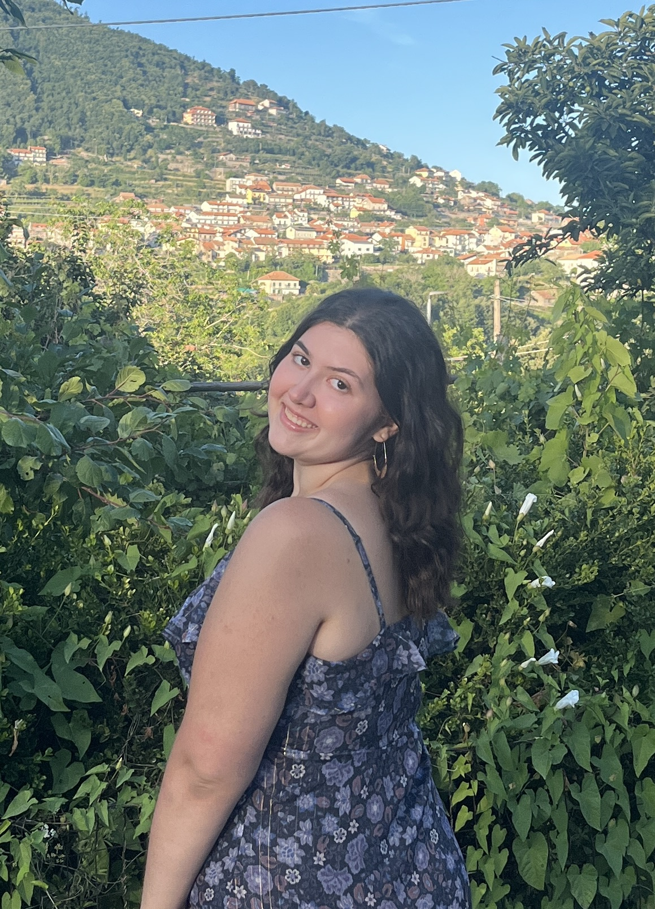

About Me

Hello, my name is Sydney Sirica a digital photographer based in Connecticut. I am currently a senior at the University of Connecticut pursuing my BFA in Fine Arts with a concentration in photography. After graduating I plan to head to graduate school to study Art Education. While I love enriching young minds with artistic expression and creativity I am passionate about photography. (figure out the rest of artist statement... I’m so bad at writing about myself).